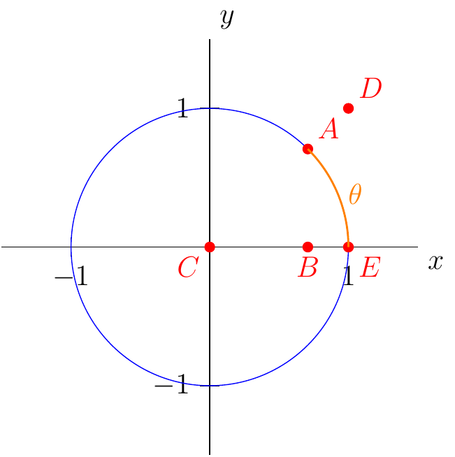

Section 2.2
Definition 1 (Informal Definition of the Limit of a Function.)
If \(f(x)\) is arbitrarily close to the number \(L\) for all \(x\) sufficiently close to \(c\), other than \(c\) itself, then we say that \(f\) approaches the limit \(L\) as \(x\) approaches \(c\), and is denoted:
In the last section we saw that \(m(x)=\frac{\sqrt{x}-2}{x-4}\) was approaching \(0.25\) as \(x\) approaches \(4\) using a graph.
That is saying:
Using a graph is one way of evaluating a limit situation. However, there are other ways to evaluate limits.
Theorem 1 (Laws of Limits)
Let \(\lim_{x\to c}f(x)\) and \(\lim_{x\to c}g(x)\) exist. Then the following hold true.
\(\lim_{x\to c} (f(x)\pm g(x)) = \lim_{x\to c}f(x) \pm \lim_{x\to c}g(x)\)
\(\lim_{x\to c} kf(x) = k \lim_{x\to c}f(x)\) where \(k\) is some real number.
\(\lim_{x\to c} f(x)\cdot g(x) = \lim_{x\to c}f(x) \cdot \lim_{x\to c}g(x)\)
\(\lim_{x\to c} \frac{f(x)}{g(x)} = \frac{\lim_{x\to c}f(x)}{\lim_{x\to c}g(x)}\) provided \(\lim_{x\to c}g(x)\ne 0\).
\(\lim_{x\to c}f^n(x) = \left( \lim_{x\to c}f(x) \right)^n\) provided \(n\) is a natural number.
\(\lim_{x\to c}\sqrt{x} = \sqrt{\lim_{x\to c} x}\)
\(\lim_{x\to c} x = c\)
\(\lim_{x\to c} k = k\) where \(k\) is some real number.
Example 2
From the previous example we can see the following.
Theorem 2
Let \(P(x)\) and \(Q(x)\) be polynomial functions. Then
provided \(Q(c)\ne 0\).
The next concept we will look at is when laws of limits doesn’t help evaluate a limit.
Evaluating Limits Algebraically
Theorem 3
If \(f(x)=g(x)\) for all \(x\) such that \(x\ne c\). Then
We have seen that
graphically. Now, we can use the previous theorem to evaluate the limit algebraically.
Example 3
Evaluate \(\lim_{x\to 4}\frac{\sqrt{x}-2}{x-4}\).
Solution:
Let \(f(x)=\frac{\sqrt{x}-2}{x-4}\). If we rationalize the numerator we have:
From this we let \(g(x)=\dfrac{1}{\sqrt{x}+2}\). Notice that \(f(x)=g(x)\) everywhere except at \(x=4\). This means we can now use the theorem.
Example 4
Evaluate
Example 5
Evaluate
Solution:
Example 6
Evaluate
Solution:
Squeeze (or Sandwich) Theorem
Theorem 4 (Squeeze (or Sandwich) Theorem)
Suppose that \(g(x)\le f(x) \le h(x)\) for all \(x\) in some open interval containing \(c\), except possibly \(c\).
Suppose
Then
Example 7
Let \(\sqrt{5-2x^2}\le f(x) \le \sqrt{5-x^2}\) for all \(x\in (-1,1)\). Evaluate \(\lim_{x\to 0} f(x)\).
Solution:
Here we will use Squeeze Theorem. We are given the first condition of the theorem:
for all \(x\) on the open interval \((-1,1)\).
Next, we must show and find \(L\)
(scratch work)
That is,
Therefore, by Squeeze Theorem, we have,
Example 8
Evaluate
Solution:
Here we will use Squeeze Theorem. First, we need to construct an inequality.
We now for all \(x\)
Also,
for all \(x\) on an open interval near zero, but except at zero.
This is almost our interval we will use for the squeeze theorem. However, we notice that we want the expression \(x^2\cos(\frac{1}{x})\). This can be achieved by multiplying by \(x^2\) to the inequality. That is, for all \(x\) near zero, except at zero, we have,
Therefore, the first condition for Squeeze Theorem is satisfied.
Next, we must verify the second condition. That is,
Therefore, by Squeeze Theorem, we have,
Example 9
Use Squeeze Theorem to show
Proof:
Consider the following construction.

We want to find \(g(\theta)\) and \(h(\theta)\) such that
for all \(x\) in an open interval containing zero.
Then we must show \(\lim_{\theta\to 0}g(\theta)=\lim_{\theta\to 0}h(\theta)=1\).
First, we will find \(h(\theta)\).
From the construction above we know the area of \(\triangle ABC\) is \(\frac{1}{2}\cos(\theta)\cdot \sin(\theta)\). Also, we know the sector area from \(A\) to \(E\) is \(\frac{1}{2} \theta(1)\). Finally, we know that as \(A\) gets closer to \(E\) along the circle the area of the triangle is smaller than the area of the sector. That is,
or
where \(\theta\) is on some open interval near zero, but not zero.
Therefore, let \(h(\theta)=\dfrac{1}{\cos(\theta)}\).
Next, we will find \(g(\theta)\)
From the construction we now \(\triangle DCE\) has an area of \(\frac{1}{2}\tan(\theta)\). Also, we now that the area of the sector will be always be smaller than the area of \(\triangle DCE\). That is,
or
where \(\theta\) is on some open interval near zero, but not zero.
Therefore, \(g(\theta)=\cos(\theta)\)
So far we have
where \(\theta\) is on an open interval containing zero, but not zero.
Now, we want to show: \(\lim_{\theta\to 0}g(\theta)=\lim_{\theta\to 0}h(\theta)=1\).
First,
Second,
Therefore,
All together now.
Since
for all \(\theta\) on an open interval containing zero, but not zero, and
we can then say by Squeeze Theorem